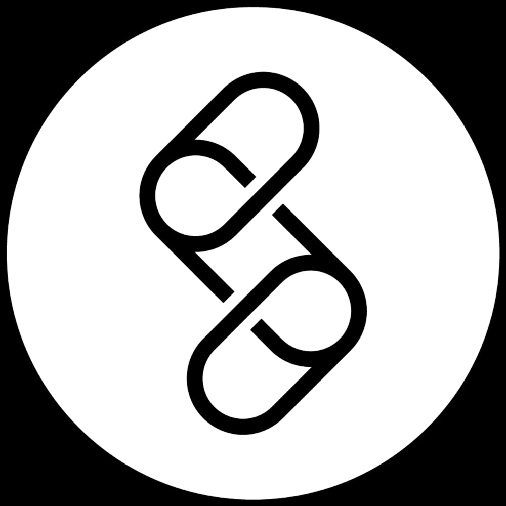

Room IIThe Practitioner
John.
Executive coach. Strategy and change consultant. Sits at the other end of the whiteboard.
Between Sessions
Moving image, atrium
John alone, annotating a tablet with a stylus.
For over a decade I consulted to organisations on change, business architecture, and strategy. That’s where the organisational instinct comes from.
Alongside and after that, I trained as an executive coach and built a practice with senior leaders, directors, VPs, and founders. That’s where the people-side instinct comes from: how high-performing leaders behave under pressure, where their patterns trip them up, what changes when the right question gets asked at the right moment.
The Whiteboard Sessions are what happens when those two careers sit at the same board.

At the Glass Wall
Whiteboard Session, mid-session
Board content obscured for confidentiality.
I sit at a board with senior leaders and we think.
The Room at Work
Whiteboard Session · May 2026
Wide view of a whiteboard session in progress.
The board makes the thinking visible. It externalises what would otherwise stay in your head. You can see the connections, the gaps, the place the argument breaks. You can move the pieces around and watch what changes.
Most weeks, the leaders I work with don’t get an hour to think this way. The session is where they do.
What’s behind the work.
-
Gallup-certified CliftonStrengths coach
The most-used talent assessment in the world, used by 90%+ of the Fortune 500.
-
FITT16 practitioner
Uses the 16-archetype model derived from CliftonStrengths in coaching engagements.
-
15+ years with senior leaders
Organisational consulting and executive coaching across plc, private and entrepreneurial contexts.
-
Multi-year retained relationships
Clients across industries and countries. See selected clients below.
Organisations and leaders worked with.





Individual leaders coached from AWS, Bassett Mechanical, Volkswagen Financial Services, Nexans, among others, across industries and countries.
Three things to know.
Mid-Session
Moving image, portrait
Mapping a strategic mind-map at the board.
-
Mixed questions, asked directly.
Reflective when the moment calls for it. Practical when there’s a real problem to solve. Obvious when no one else is willing to ask. The work is done in the room, through to a solution. Not in questions you take away.
-
I’ll tell you when I think you’re the problem.
Not bluntly. Not unkindly. But I won’t pretend not to see it, because that’s the most expensive thing a coach can do.
-
Long-term by default.
The clients who get the most from this work tend to stay for years. Not because they’re stuck. Because the thinking partnership compounds.
The fuller personal story, the path that led to this work and what came before, sits on a separate page.